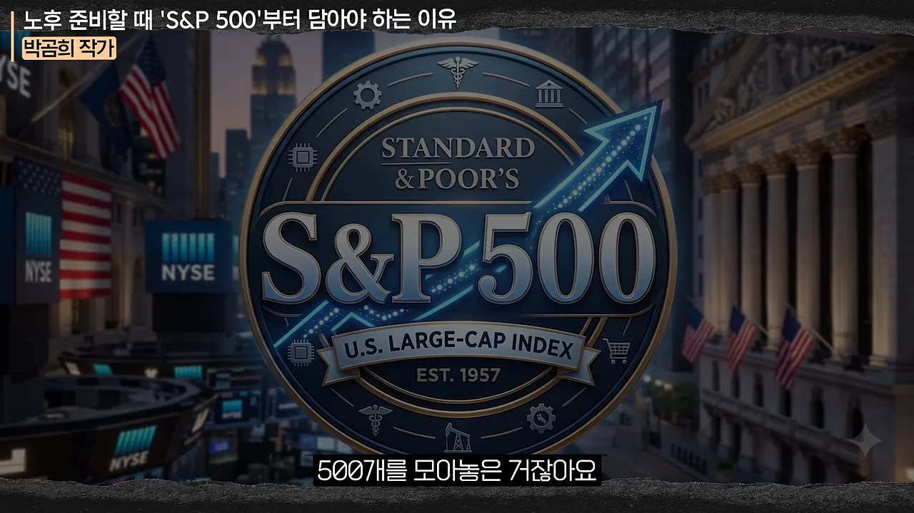
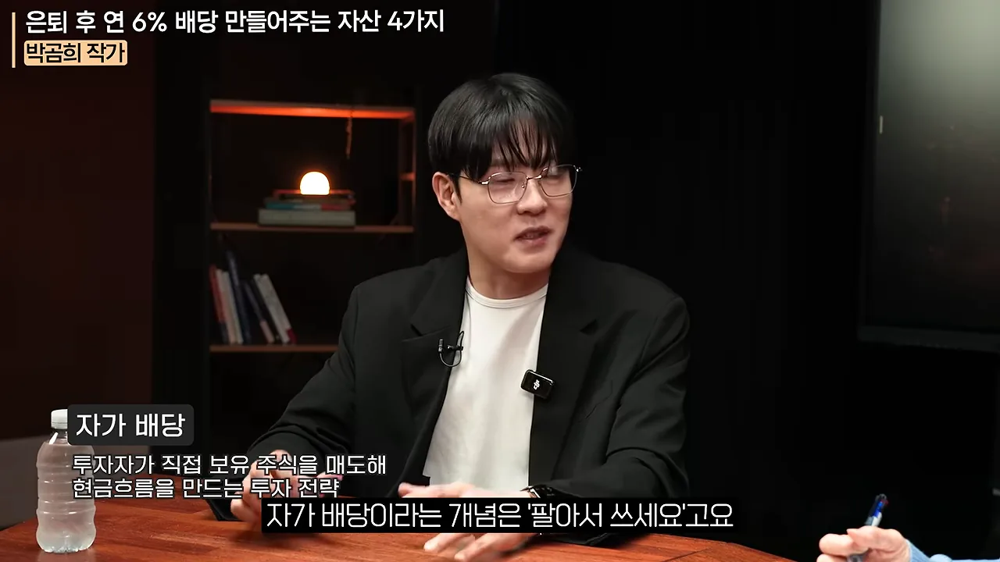
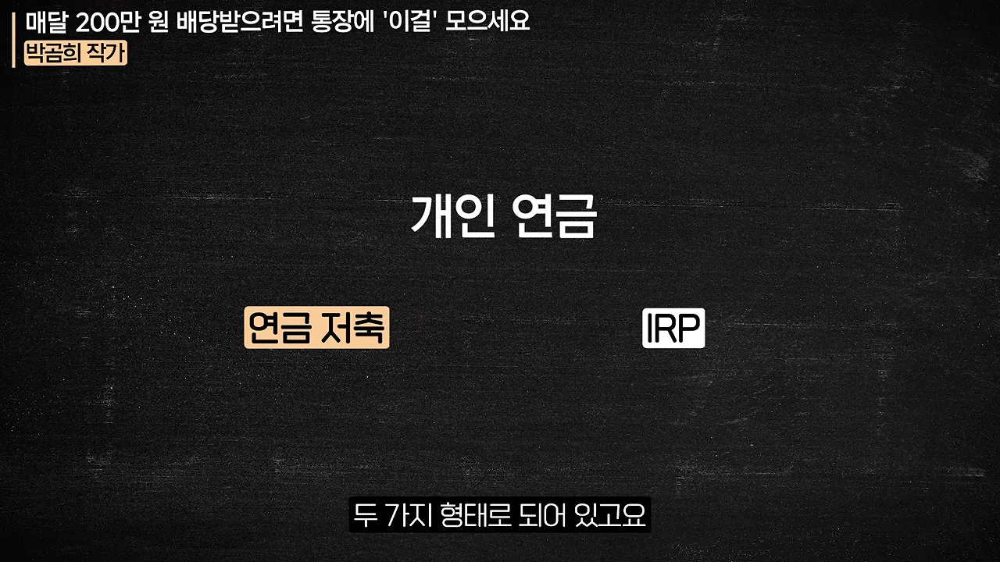
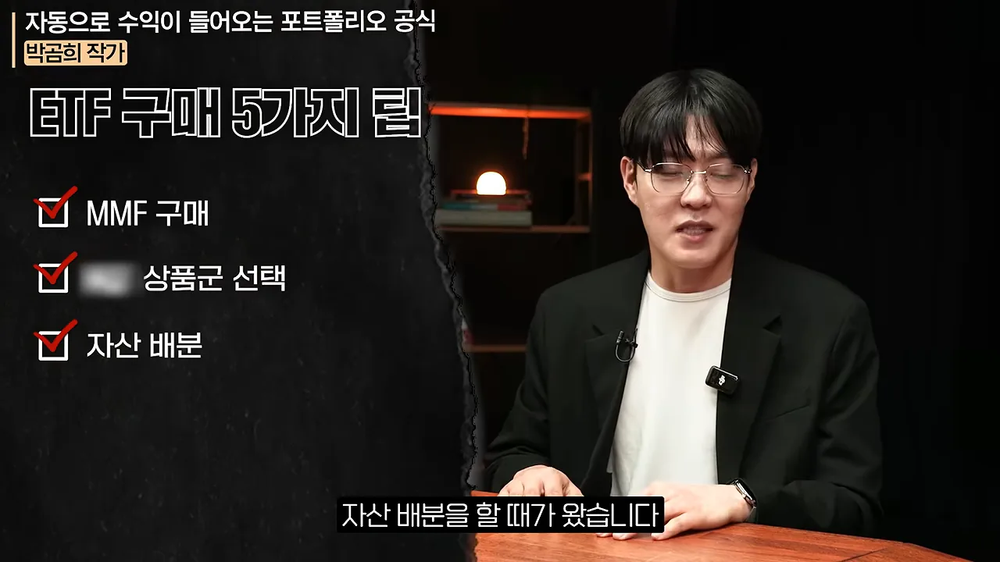
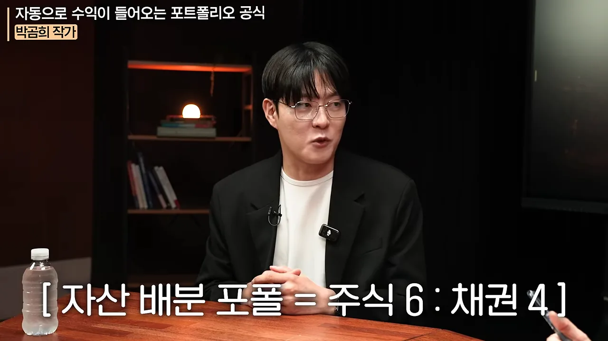
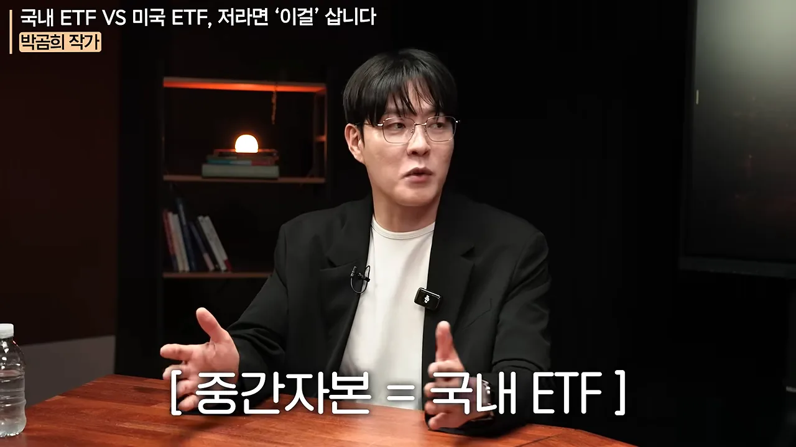
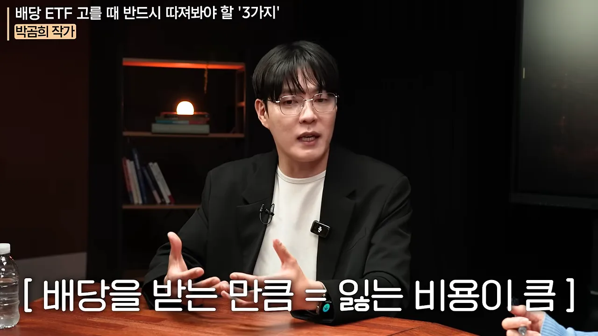
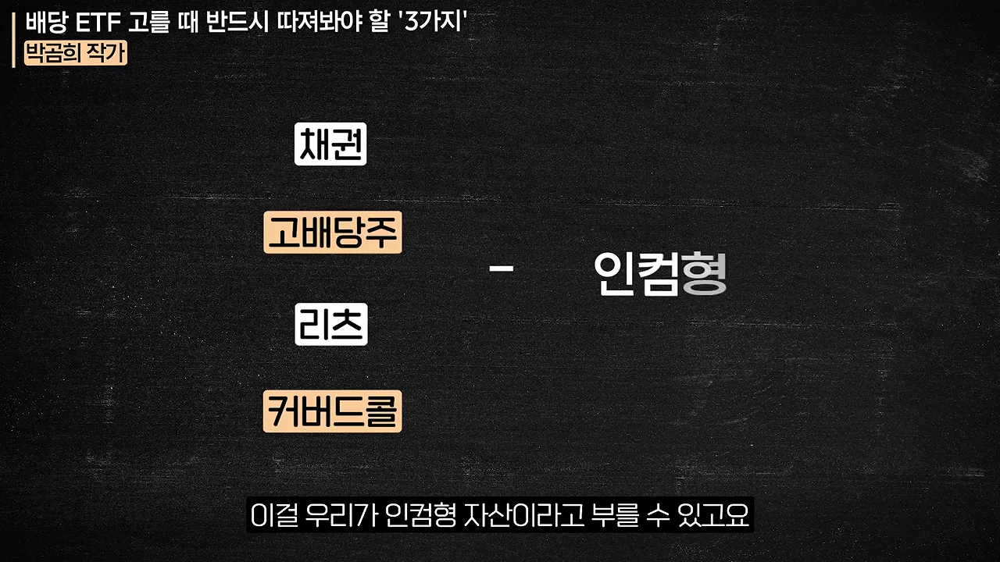

평범한 사람에게 맞는 투자, 그리고 S&P 500
박곰희 작가는 금융사에서 일하며 부자들을 상담했어요. 부자들과의 대화는 수익을 더 내는 법보다 "최악의 상황이 뭔가"를 따지는 리스크 관리가 중심이었고, 공격적으로 투자하는 사람은 소수였대요. 반대로 주변 지인들은 작은 종목에 손댔다가 상장폐지를 당하는 일이 잦았어요.
회사를 떠날 때 작가가 본 건 연금 계좌에 월급 일부를 꾸준히 넣은 사람들의 기록이었어요. 시간이 만든 결과가 컸다는 거예요. 그래서 작가는 실력으로 시장을 이기는 투자자는 극소수이고, 대다수에게는 패시브 투자가 맞다고 정리해요. 절세 계좌에 ETF를 조합해 담고, 월급 일부를 계속 부어서, 일을 못 하게 됐을 때 그 뒤를 받쳐 주게 만드는 방식이에요.
일확천금으로 파이어할 생각하지 말고요.
— 영상 02:12
왜 하필 S&P 500인가요
영상은 S&P 500을 설명하면서 아래 그래픽을 띄워요. 가운데 로고의 'U.S. LARGE-CAP INDEX'가 핵심이에요. 미국 대형주 500개를 모은 지수라서, 이걸 사면 사실상 미국을 통째로 사는 셈이에요.

작가가 노후 자금의 바닥으로 S&P 500을 깔라고 하는 이유는 두 가지예요.
- 오래, 높게. 나라 지수인데도 긴 기간 연평균 10%를 넘는 수익을 냈어요. 작가는 13% 정도라고 말해요. 이만큼 오래 10% 이상을 준 지수는 없다는 거예요.
- 기간이 길면 손실 가능성이 거의 없어요. 아무 10년을 떼어 봐도 손실 확률이 한 자릿수였고, 20년으로 늘리면 0이었대요.
작가는 이 수치를 워런 버핏(약 25%), 피터 린치(29%)의 연평균 수익률과 견줘요. 지수 하나가 전설적인 투자자와 비교될 만큼 낸다는 뜻이에요. 그래서 미국에 연금 부자가 많은 건 투자를 잘해서가 아니라 투자를 했기 때문이라고 말해요.
불릴 때와 꺼내 쓸 때는 다른 자산을 써요
미국은 늘어난 노후를 감당하려고 월급의 10%를 401k 퇴직연금에 거의 반강제로 투자하게 했어요. 그렇게 불린 돈을 은퇴 뒤에 쓰는 길은 두 가지였어요. 화면 왼쪽 아래 자막이 첫 번째 길인 '자가 배당'을 설명해요. 가진 주식을 조금씩 팔아서 생활비를 만드는 방식이에요.

이유는 사람 마음이에요. 평생 모은 돈이 줄어드는 걸 보는 게 너무 고통스러워서, 대부분은 팔아 쓰지 못해요. 결국 큰돈을 계좌에 그대로 둔 채 가난하게 사는 일이 생긴대요. 그래서 작가는 시기에 따라 쓰는 자산을 아예 나눠요.
지금 연 6%를 만드는 네 칸
작가는 2026년 9월 기준으로 고금리 시기가 다시 왔고, 한국 금리가 미국보다 훨씬 높다고 봐요. 그래서 S&P 500이 없어도 배당만으로 충분히 버틸 수 있대요. 예로 든 조합은 이래요.
| 칸 | 작가가 예로 든 것 |
|---|---|
| 한국 주식 | 고배당주, 글로벌 인컴 자산을 모은 ETF |
| 한국 채권 | 채권 ETF |
| 미국 주식 | SCHD(Schwab U.S. Dividend Equity ETF) 같은 배당 ETF |
| 미국 채권 | 미국 채권 ETF |
정리하면 한국 사람이 흔히 쓰는 길은 은퇴할 때까지 S&P 500 같은 지수로 불리고, 은퇴 뒤에는 인컴형 자산으로 바꿔 배당만 받는 거예요. 그래야 오래 살아도 걱정이 없다는 게 작가의 말이에요.
3억 원과 3층 연금
진행자가 묻는 건 하나예요. 원금을 건드리지 않고 월 200만 원 정도를 받으려면 얼마를 모아야 하느냐는 거예요. 작가의 답은 3억 원이에요. 회사를 다니며 받는 돈을 다 합치면 누구나 10억~20억 원이 되니, 그중 3억은 누구나 모을 수 있는 최소 목표로 잡았대요.
3억 원을 연 6% 월배당으로 세팅하면 1년에 1,800만 원, 한 달에 150만 원이에요. 3억만으로 200만 원이 되는 건 아니에요. 작가는 이 150만 원을 맨 위층에 얹고, 아래 두 층과 합쳐서 생활비를 만든다고 설명해요.
2층 퇴직연금은 회사를 다니는 동안 어딘가에 쌓이던 퇴직금이에요. 퇴사할 때 IRP(Individual Retirement Pension) 계좌를 내면 그리로 들어오고, 연금으로 받겠다고 신청하면 퇴직연금이 돼요. 이때 안의 돈을 5~6% 배당 포트로 바꾸고, 배당이 나오는 만큼만 수령 신청하면 원금을 최대한 지킬 수 있어요.
3층 개인연금은 영상이 칠판 화면으로 따로 보여 줘요. 가운데 '개인 연금' 아래 왼쪽이 연금저축, 오른쪽이 IRP예요.

퇴직금 규모는 회사 선배에게 물으면 대략 나와요. 작가는 1억~2억 원, 큰 기업은 3억 원쯤이라고 말해요. 세액공제를 받으려고 모은 연금저축·IRP도 요즘은 대부분 갖고 있고 금액도 작지 않대요. 결국 핵심 마인드는 "모은 걸 빼 쓴다"가 아니라 "배당으로 바꿨을 때 매달 얼마가 쌓이느냐"예요. 1층과 2층이 받쳐 주니, 3층을 3억 원으로 만들면 매우 넉넉한 노후가 된다는 게 이 대목의 결론이에요.
연금저축 첫 포트는 이 순서로
연금저축을 열면 보통 한 달 50만 원, 1년 600만 원을 채우려고 해요. 직장인도 사업자도 5월 종합소득세 신고 때 받는 세금 혜택으로 이만한 게 없어서예요. 문제는 그다음이에요. ETF는 개수 제한도, 매매 횟수 제한도 없어서 경우의 수가 끝이 없고, 그래서 많은 사람이 아무것도 못 사요.
작가는 그래서 순서를 정해 줘요. 영상은 이 순서를 'ETF 구매 5가지 팁'이라는 체크리스트로 띄워요. 화면에는 세 줄이 보이고, 두 번째 줄의 상품 이름은 가려져 있어요. 대화에서 그 자리는 TDF예요.

- MMF부터 사요. 연금 계좌는 돈을 넣고 아무것도 안 사면 현금으로 그냥 놀아요. 이자가 붙지 않으니, 최소한 파킹 통장 수준의 이자는 받도록 MMF를 사 둬요.
- TDF를 사요. 여러 자산을 섞어 안정적으로 굴리는 일을 통째로 맡기는 상품이에요. 연금 계좌에서 'TDF'를 검색하면 쭉 나오고, 그중 아무거나 사도 된대요. 대부분 S&P 500을 깔고 있어요. 이름 뒤 연도는 은퇴 예정 연도예요. 내 출생 연도에 65를 더해 가까운 숫자(2045, 2050, 2060 등)를 고르면 돼요
- 직접 자산배분을 해요. 잔고가 천만 원 단위로 늘고 내 손으로 해 보고 싶어질 때예요. ETF 몇 개를 정한 비율대로 들고 가요.
TDF는 젊은 사람에게는 주식을 많이 담아 주고, 나이가 들수록 주식을 줄여 줘요. 그 조절을 대신해 주는 게 TDF의 일이에요.
기준은 주식 6 : 채권 4
세 번째 단계의 기준 포트폴리오를 영상은 아래 자막으로 못 박아요.

각 칸을 무엇으로 채우는지도 작가가 정리해 줘요.
| 칸 | 처음 | 금액이 커지면 |
|---|---|---|
| 주식 60% | S&P 500 | 나스닥 100, 코스피 200, 코스닥 150, 니케이 225, CSI(China Securities Index) 300, VN30(Vietnam 30 Index)처럼 나라를 넓혀요 |
| 채권 40% | 미국채 10년물이나 국고채 3년물을 담은 ETF | 고민하기 싫으면 국내 종합채권 ETF 하나 |
주식 칸 안의 비율은 기관처럼 시가총액에 맞출 필요까지는 없대요. 미국을 절반쯤 두고 나머지 절반을 다른 나라로 채우면 충분하다고 해요. 직접 짜면 TDF보다 비용이 싸다는 것도 장점이에요.
브랜드와 거래량은 고민하지 않아도 돼요
S&P 500 ETF는 타이거, 코덱스, 플러스, 라이즈, 키움 등 여러 브랜드로 내요. 작가는 여기서 고르는 데 시간을 쓰지 말라고 해요. 편의점에서 100원 차이, 브랜드 차이로 물 하나를 10분째 못 사는 것과 같대요. 괴리율이나 추적 오차는 선물이 많이 들어간 원자재 상품이나 거래가 적은 상품에서 걱정할 일이에요. S&P 500처럼 크고 거래가 많은 시장에서는 신경 쓸 필요가 없어요.
국내 상장 ETF냐, 미국 ETF냐
S&P 500에 투자하는 길은 두 가지예요. 국내 증시에 상장된 S&P 500 ETF를 사거나, 미국 증시의 ETF를 직접 사는 거예요. 작가는 결론부터 말하는데, 영상은 그 결론을 금액대별 자막으로 하나씩 띄워요. 아래는 그중 가운데 칸이에요.

| 투자금 | 고를 것 | 이유 |
|---|---|---|
| 아주 작아요 (몇천만 원까지) | 미국 ETF | 차익 250만 원까지는 세금이 없어요. 넘지 않게 수익을 실현하면 세금 없이 갈 수 있어요 |
| 대부분의 사람 | 국내 상장 ETF | 절세 계좌와 궁합이 좋아요. 일반 계좌의 차익 세금 15.4%를 안 내거나 줄여요 |
| 아주 많아요 | 미국 ETF | 250만 원을 넘으면 22%를 내요. 종합소득세율이 24%, 35%로 오르는 고소득자에게는 22%가 낫대요 |
대부분에게 국내 상장 ETF가 나은 이유는 절세 계좌예요. ISA(Individual Savings Account), 연금저축, IRP가 깔려 있는 한국 환경에서는 세액공제를 받으면서 절세 계좌를 쓰는 게 직장인 대부분에게 훨씬 유리하다는 거예요.
나머지 차이는 작아요. 운용사가 어디든 크기는 상관없고, 보수 차이도 소수점 아래 몇 자리 수준이라 볼 필요가 없대요. 환율도 이제는 차이가 없어요. 국내 상장 ETF도 대부분 환노출형이라, 달러로 투자하고 싶다면 국내 ETF로도 충분히 가능해요. 결국 미국이냐 국내냐는 세금 하나만 보고 정해도 된다는 게 작가의 말이에요.
배당 ETF를 고를 때 따질 세 가지
주가가 크게 떨어지면 배당 수익률이 높아 보여요. 지금이 싸게 살 기회 같아서 그쪽으로 몰리는 사람이 많아요. 진행자는 이때 정말 살 만한 배당 ETF인지 가리는 법을 묻고, 작가는 세 가지를 짚어요.
1. 커버드 콜은 일단 빼 놓아요
작가는 커버드 콜 전략이 장기 수익률에 불리하다고 말해요. 영상은 그 이유를 아래 자막 한 줄로 요약해요.

그래서 커버드 콜은 배당 포트의 일부 양념으로 쓰거나, 배당 수익률을 높여야 하는 은퇴자에게 맞는 상품이라고 봐요. 기본 판단에서는 일단 빼 놓고 생각하래요.
2. 배당이 어디서 나오는지 봐요
배당 수익률이 높은 순서로 볼 때 더 중요한 건 그 돈의 출처예요. 영상은 인컴형 자산을 칠판 화면에 차례로 올려요. 위에서부터 채권, 고배당주, 리츠, 커버드 콜이고, 오른쪽에 '인컴형'이라고 묶어요.

| 자산 | 돈이 나오는 곳 | 작가 평가 |
|---|---|---|
| 고배당주 | 기업이 주는 배당 | 좋은 배당원 |
| 리츠 | 부동산 임대료 | 좋은 배당원 |
| 채권 | 채권 이자 | 좋은 배당원 |
| 지수 + 커버드 콜 | 옵션 시장에서 받는 돈 | 좋은 배당원이 아니에요 |
위의 세 가지는 시장이 꽤 흔들려도 계속 나올 수밖에 없는 돈이에요. 그래서 같은 종류끼리 비교해 고르는 건 좋은 선택이래요. 미국 채권과 한국 채권 중 월배당을 더 주는 쪽, 미국 고배당주와 한국 고배당주 중 더 주는 쪽을 고르는 식이에요. 반면 미국 지수에 커버드 콜을 붙여 높은 분배금을 준다면 그건 배당이 아니라 옵션 수익이에요. 작가는 수익률이 조금 낮더라도 기업 배당을 많이 주는 고배당주가 더 낫다고 봐요.
3. 비교 사이트로 착시를 걸러요
ETF 비교 사이트에 들어가면 월배당이 얼마인지, 지금 가격에 사면 기대할 수 있는 배당 수익률이 얼마인지 보여 줘요. 높은 순으로 정렬하면 위쪽에는 이상한 상품이 몰려 있어요. 커버드 콜이거나, 배당을 더 줘서가 아니라 주가가 너무 빠져서 수익률만 높아 보이는 착시예요. 그걸 걷어 내고 남은 정상적인 인컴 상품 몇 개를 섞으면 아주 높은 월배당을 세팅할 수 있대요.
20대의 첫걸음과 은퇴 전 5개년 플랜
진행자는 20대와 은퇴를 앞둔 사람에게 각각 어떻게 다르게 하라고 할지 물어요. 작가는 둘의 투자가 완전히 다르다고 답해요.
20대: 양극단에서 가운데로
작가는 처음 투자하는 사람을 처음 술 마시는 사람에 비유해요. 얼마나 마셔야 할지 몰라서 아예 안 마시거나 많이 마셔요. 투자도 그래서, 20대는 아예 안 하거나 이왕이면 짜릿하게 3배 레버리지로 가요. 가운데가 텅 비어 있대요. 금융 역사에서 양극단에서 성공한 경우는 없으니, 레버리지 쪽은 끌어내리고 예적금만 하는 쪽은 끌어내서 가운데에서 만나게 해야 한다는 거예요.
작가가 20대에게 권하는 첫걸음은 구체적이에요. ISA 하나를 만들고 한 달에 50만 원을 넣어요. 그중 10만 원은 연금저축에, 40만 원으로는 S&P 500 ETF를 사요. 작가는 S&P 500은 13%, 나스닥은 많게는 18%까지 기대수익률을 잡을 수 있다며, 일단 실행하게 만드는 게 가장 중요하다고 봐요.
은퇴 직전: 5개년 플랜
55세~60세 무렵에는 다른 문제가 생겨요. 자녀에게 돈을 많이 써서 노후 준비가 덜 된 경우가 많아요. 대신 퇴직금은 충분히 쌓여 있고, 급여가 높고, 자녀 숙제도 대개 끝나 있어요. 작가는 이때 5년이면 충분하다며 계획을 내놓아요.
- ISA와 IRP를 열어요. 해마다 ISA에 2,000만 원, IRP에 1,800만 원을 넣어요. 1월 1일이 지나면 또 넣어요. 목돈이 없으면 ISA 월 167만 원, IRP 월 150만 원이에요. 합치면 월 300만 원 남짓이에요
- 안에서는 6 : 4 자산배분이나 TDF로 굴려요. 넣을 돈은 보통 예적금, 저축보험, CMA(Cash Management Account) 같은 데 이미 있대요.
- 5년 뒤 ISA를 해지해 IRP로 보내요. ISA에는 원금 1억 원과 수익, IRP에는 9,000만 원과 수익이 있어요. ISA를 다 팔아 IRP로 옮기면 IRP 원금이 2억 원 가까이 돼요. ISA는 그 자리에서 다시 열어 또 넣어요.
- 은퇴 뒤 바로 받지 말고 5~10년 더 굴려요. 작가는 이 돈이 매우 높은 확률로 3억 원을 훌쩍 넘는다고 봐요. 3층 연금의 맨 위층이 이렇게 채워져요.
- 퇴직금은 증권사 IRP로 받아요. 은행 말고 증권사 IRP가 수수료가 무료라서래요. 해지하지 않고 배당 포트를 짜서 연금으로 신청해요.
작가는 이 과정에서 필요한 건 수익률을 끌어올리는 노력이 아니라고 강조해요. 5년 동안 연 7% 정도를 얼마나 안정적으로 가져갈지가 훨씬 중요하고, 10년이면 더 편하다는 거예요.
3040에게: 꾸준함, 그리고 1억은 투자로
3040은 오히려 더 혼란스러워요. 코인을 했다가 부동산을 했다가, 주식이 오르면 주식을, 해외 주식이 좋다면 해외 주식을 해요. 작가도 직장 생활 동안 남의 돈을 굴리며 그렇게 우왕좌왕했대요. 그런데 다 겪고 나서 알게 된 답은 의외였어요.
다 답이었어요.
— 영상 24:37
지나고 보니 다 벌었다는 거예요. 2017년 하반기에 비트코인을 사고팔던 사람은 중간에 빠진 때가 있었어도 지금 돈을 벌었어요. 부동산을 하던 사람도 2022~2023년 힘든 시기를 지나 계속 간 사람은 큰돈을 벌었어요. 주식도 마찬가지예요. 잘 골랐느냐가 아니라 하나를 골라 계속 갔느냐가 갈랐다는 거예요.
그래서 작가가 3040에게 주는 가장 중요한 조언은 영상을 너무 많이 보지 말라는 거예요. 다 돈 버는 방법이라서 이것저것 옮겨 다니게 되니까요. 자기 철학을 찾아 하나를 고르고, 엇박자를 내지 않으며 꾸준히 가는 게 핵심이에요. 작가는 금융 현업에서 브렉시트, 사드, 트럼프 당선을 겪었는데, 그때마다 세상이 망한다고 했지만 쉽게 망하지 않았고 보통 걱정하는 사람이 더 빨리 망했대요. 1~3년 만에 내 투자를 판단하기에는 너무 짧다는 거예요.
"1억부터 모아라"에 반대하는 이유
진행자는 흔한 조언을 꺼내요. 우선 1억을 모아야 그다음이 달라진다는 말이에요. 작가는 이 말에 전혀 동의하지 않아요. 직접 해 봤는데 안 됐대요. 국내 가장 큰 증권사에 들어가 연봉이 많을 줄 알았지만, 남보다 조금 많을 뿐 정년은 더 짧게 느껴졌대요.
- 급여는 수십 배 차이가 날 수 없어요. 자산은 수십 배 차이가 나요. 인생을 바꾸는 건 급여가 아니라 자산의 크기예요.
- 월급을 아껴 1억을 모으기엔 너무 오래 걸려요. 절약도 중요하지만, 1억은 투자로 모아야 한대요. 그래야 1억이 모였을 때 "해 보니 나는 이게 맞아"라며 출발할 수 있어요.
- 돈만 모아 두는 건 운전 안 하는 면허와 같아요. 드림카를 사려고 수십 년 운전을 안 하는 셈이래요. 진행자는 그사이 소형차, 중고차도 몰아 보며 경험을 쌓아야 한다고 받아 정리해요.
작가는 초년생이 1억을 모으며 실수해도 몇백만 원, 많아야 1,000만~2,000만 원 잃는 선에서 모든 걸 배울 거라고 봐요. 40대가 넘으면 1억은 대개 어떤 형태로든 갖고 있는 돈이 되고, 그때부터는 수익률이 큰 격차를 만들어요. 그러니 이 답을 늦게 알면 안 된다는 거예요.
떨어졌을 때 버티는 법: 마라톤처럼
작가는 지금 상황을 거꾸로 보라고 해요. 주식이 많이 무너졌고 금리가 높아요. 채권을 갖고 있던 사람은 손실이 크고 힘든 구간이에요. 그런데 반대로 보면, 지금 배당에 초점을 두고 인컴형 자산을 사면 배당 수익률이 아주 높아요. 2022년에도 똑같은 상황이 있었대요.
반토막 난 자산은 팔지 말고 따로 판단해요
가진 자산이 -50%가 됐고 물을 타도 변화가 없는 상황을 가정해요. 작가는 바로 그때가 팔면 안 되는 순간이라고 말해요.
매도로 헤어지면 안 되고 이제 앱을 지우는 걸로 헤어져야 되는 거죠.
— 영상 28:58
대신 위로가 되는 방법을 하나 제안해요.
- 새 목돈으로 배당 포트를 세팅해요. 다시 모은 돈이나 만기가 돌아오는 예금으로 연 8~9% 배당 포트를 묵직하게 짜요.
- 손실을 메우는 데 몇 년 걸리는지 계산해요. 높은 배당 포트는 해마다 얼마를 줄지 거의 계산이 돼요. 3년, 4년, 5년 뒤처럼 끝이 보이면 해 볼 만하대요
- 기다려요. 돈을 더 부은 배당 포트는 5년 뒤면 큰돈이 돼 있고, 그때쯤이면 보통 주식도 살아나 있어요.
그러면 5년 뒤에는 맑은 정신과 함께, 인생 2막을 챙겨 줄 시드가 만들어져 있다는 거예요. 반대로 하면 안 되는 일도 분명히 말해요. 손실 난 자산을 팔아 단기 테마로 만회하려는 건 "죽었다 깨어나도 안 된다"고요. 지금은 이미 바닥에 있는 타이밍이라, 피터 린치의 말처럼 갖고 있는 걸 유지하는 게 보통은 좋은 선택이래요.
남을 이기는 단거리가 아니에요
작가는 투자를 내 결승선에만 가면 되는 마라톤에 비유하며 마무리해요. 남들이 앞질러 가도 지금 신경 쓸 일이 아니라는 거예요. 지금의 높은 배당을 잘 활용하는 고민을 해 보라고 권해요. 시간이 지나 배당 포트에 돈이 많이 쌓였을 때는 금리 사이클도 바뀌어 있을 수 있고, 그때부터가 더 중요해진대요.